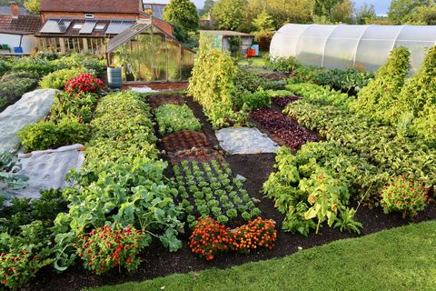
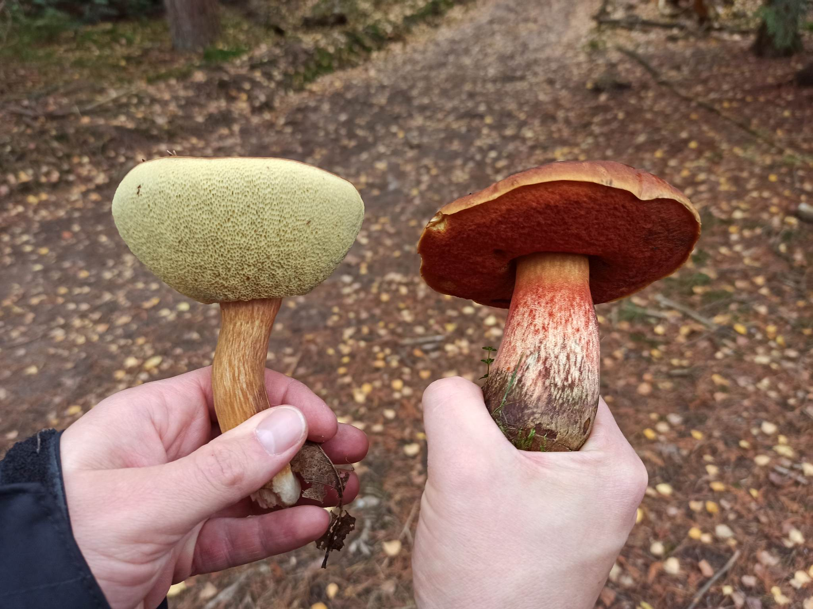

How to grow without digging
Did you knew it is perfectly possible to grow your vegetable-garden without putting even one spade in the ground? Better for your back, but also for the eco-system. Continue reading to learn how to increase your yield with less effort!
The top 5 edible mushrooms
Picking mushrooms in the forest can be a scary thing to do. Which one is poisonous and which one is edible? In this article we will show you the 5 easiest mushrooms to recognize. You don't want to miss out on these delicious species!
The seven layers of a food forest
To start your own food forest, you need to understand how a forest works. Read this article and we promise you that, aside from knowing how to start your food forest, you will never look at a forest the same!